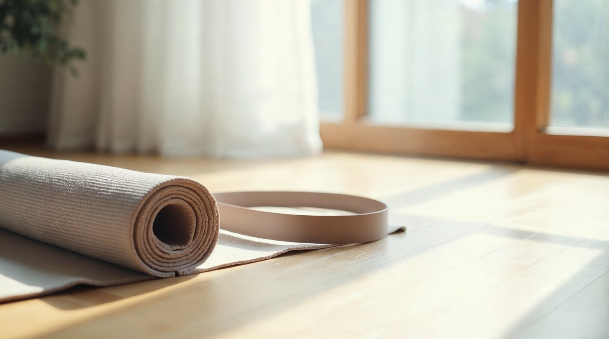
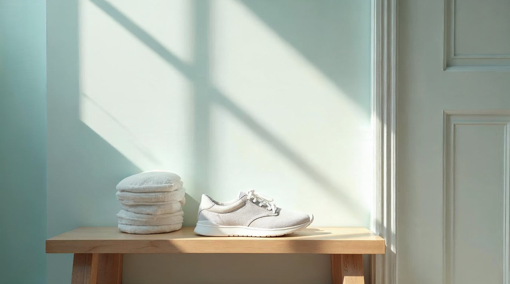
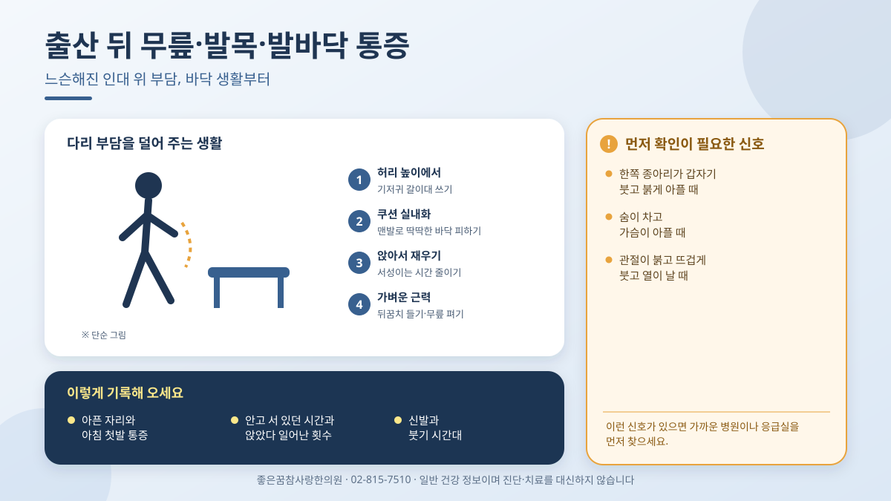

이종호 한의사 감수좋은꿈참사랑한의원 대표원장 (한의사 면허번호 19769)발행 2026-11-26 · 수정 2026-11-26
이 글의 차례
새벽 수유를 마치고 아기를 재우려 방 안을 서성입니다. 한 시간쯤 안고 걷다 보면 무릎이 시큰하고, 아침에 침대에서 내려와 첫발을 디디면 발뒤꿈치가 찌르듯 아픕니다. 바닥에 앉아 기저귀를 갈고 일어설 때마다 '아이고' 소리가 절로 나옵니다.
출산 뒤 무릎과 발목, 발바닥 통증은 생각보다 많은 분이 겪습니다. 그런데 산후조리라고 하면 허리와 골반, 손목만 떠올리기 쉬워서, 다리 쪽 통증은 '원래 그런가 보다' 하고 참고 지내시는 분이 많습니다. 아기를 돌보느라 내 다리까지 신경 쓸 틈이 없기도 합니다.
하지만 다리는 아기를 안고 서 있고, 걷고, 바닥에서 일어나는 모든 일을 떠받칩니다. 무릎이나 발바닥이 아프면 아기를 안는 자세가 흐트러지고, 그 부담이 다시 허리와 손목으로 옮겨 갑니다. 그래서 다리 통증은 산후 회복 전체와 이어져 있다고 생각합니다.
이 글에서는 출산 뒤 다리 통증이 왜 생기는지, 아픈 자리마다 무엇이 다른지, 그리고 아기를 돌보면서도 해 볼 수 있는 생활 요령을 차례로 정리해 보겠습니다.
출산 뒤 다리 통증은 어떤 모습으로 오나요
가장 흔한 것은 무릎 앞쪽과 안쪽이 시큰한 통증입니다. 바닥에 앉았다 일어설 때, 계단을 내려갈 때, 쪼그려 앉아 빨래를 갤 때 특히 심해집니다. 무릎이 붓거나 뻑뻑하게 느껴지는 분도 계십니다.
발목은 바깥쪽이나 안쪽 복사뼈 주변이 뻐근하고, 오래 서 있으면 붓고 무거워지는 경우가 많습니다. 발바닥은 아침 첫발을 디딜 때 뒤꿈치 안쪽이 찌르듯 아프다가, 조금 걸으면 덜해지는 모양이 흔합니다.
이 세 자리는 따로 아프기도 하지만 함께 아픈 경우도 많습니다. 발바닥이 아파 걸음이 흐트러지면 발목과 무릎에 부담이 옮겨 가고, 무릎이 아파 한쪽 다리에 힘을 덜 주면 반대쪽 다리가 더 힘들어지기 때문입니다.
왜 출산 뒤에 무릎과 발목, 발바닥이 아플까요
임신 중에는 출산을 준비하기 위해 인대를 느슨하게 만드는 호르몬이 나옵니다. 이 영향은 골반에만 머무르지 않고 무릎과 발목, 발의 인대에도 미칩니다. 출산 뒤에도 이 느슨함이 한동안 남아 있어서, 관절을 잡아 주는 힘이 평소보다 약한 시기가 이어집니다.
여기에 출산 뒤의 생활이 더해집니다. 다리에 부담을 주는 흔한 이유를 꼽아 보면 이렇습니다.
- 아기를 안고 오래 서 있거나 방 안을 서성이는 시간
- 바닥에 앉아 기저귀를 갈고 쪼그려 앉아 일어서는 동작
- 임신 중 늘어난 체중이 아직 다리에 실려 있는 상태
- 맨발이나 바닥이 얇은 실내화로 딱딱한 바닥을 걷는 생활
- 임신 중 발 아치가 내려앉아 발바닥이 평평해진 경우
- 잠이 부족하고 몸 전체가 지쳐 회복할 틈이 적은 상태
임신 중에 발 사이즈가 커졌다는 분이 계신데, 이것도 발의 인대가 느슨해지고 아치가 낮아지면서 생기는 변화로 알려져 있습니다. 아치가 낮아지면 발바닥 근막이 더 당겨지고, 그 부담이 발목과 무릎까지 이어질 수 있습니다.
아픈 자리마다 무엇이 다른가요
같은 다리 통증이라도 아픈 자리와 모양에 따라 살피는 방향이 달라집니다. 아래처럼 나눠 보시면 도움이 됩니다.
- 무릎뼈 주변 앞쪽이 시큰하고 계단을 내려갈 때 심한 경우: 무릎뼈와 허벅지뼈가 맞닿는 자리에 부담이 쌓인 경우가 많습니다.
- 무릎 안쪽 아래가 콕 집히듯 아픈 경우: 무릎 안쪽 힘줄이 붙는 자리에 부담이 생긴 경우일 수 있습니다.
- 발목이 자꾸 꺾일 것 같고 불안한 경우: 느슨해진 인대와 약해진 발목 근육이 함께 영향을 줄 수 있습니다.
- 아침 첫발에 발뒤꿈치 안쪽이 찌르듯 아픈 경우: 발바닥 근막에 부담이 쌓인 족저근막염의 모양과 비슷합니다.
- 발뒤꿈치 한가운데가 멍든 것처럼 아픈 경우: 뒤꿈치 지방 패드가 눌려 생기는 통증일 수 있습니다.
출산 뒤에는 손목과 손가락도 함께 아픈 분이 많습니다. 여러 관절이 함께 아플 때는 산후 회복 전체의 흐름을 보고, 관절이 붉게 붓고 뜨겁다면 다른 원인이 없는지 확인해 봐야 합니다.
시리고 바람 드는 느낌과는 어떻게 다른가요
출산 뒤 관절 이야기를 하면 많은 분이 산후풍을 먼저 떠올리십니다. 산후풍이라고 부르는 상태는 관절이 시리고, 찬바람이 드는 것 같고, 몸 여기저기가 저리고 무거운 느낌이 함께 오는 경우를 흔히 말합니다. 찬 기운과 날씨에 따라 달라진다는 것이 특징입니다.
이 글에서 다루는 통증은 특정 동작에서 특정 자리가 아픈 경우에 더 가깝습니다. 바닥에서 일어설 때 무릎 앞쪽, 아침 첫발에 뒤꿈치처럼 아픈 자리와 동작이 비교적 분명합니다. 물론 두 가지가 섞여 있는 분도 많아서, 진료실에서는 아픈 자리와 시린 느낌을 함께 나눠 여쭙습니다.
어느 쪽이든 관절을 따뜻하게 지키는 것은 기본입니다. 찬 바닥에 맨발로 서 있지 않고, 에어컨이나 찬바람이 다리에 바로 닿지 않게 해 주세요. 샤워 뒤에는 다리를 바로 말리고 양말을 신어 두시면 좋습니다.
집에서 해 보는 간단한 점검
아래 질문에 스스로 답해 보세요. 진료실에서 여쭙는 내용과 거의 같습니다.
- 가장 아픈 자리는 무릎, 발목, 발바닥 가운데 어디인가요?
- 아침 첫발이 가장 아픈가요, 오래 서 있은 뒤가 더 아픈가요?
- 바닥에서 일어설 때와 계단을 내려갈 때 가운데 어느 쪽이 더 힘든가요?
- 아픈 관절이 붓거나 열감이 있나요?
- 임신 중에도 다리가 아팠나요, 출산 뒤 새로 생겼나요?
- 집 안에서 신는 신발이나 실내화가 있나요?
아침 첫발이 가장 아프고 조금 걸으면 덜해진다면 발바닥 근막 쪽을, 바닥에서 일어설 때 무릎이 시큰하다면 무릎 앞쪽의 부담을 먼저 생각해 봅니다. 통증이 점점 심해지거나 붓기가 이어진다면 진료를 받아 보시는 것이 좋습니다.
먼저 이렇게 여쭙니다
처음 오시면 저는 대략 이런 순서로 여쭙니다. 미리 생각해 오시면 이야기가 훨씬 수월해집니다.
- 출산은 언제, 어떤 방법으로 하셨나요?
- 모유 수유 중이신가요? 하루에 몇 번 수유하시나요?
- 통증은 언제부터 시작됐고, 어느 자리가 가장 아픈가요?
- 아기를 안고 서 있는 시간은 하루에 얼마나 되나요?
- 집은 바닥 생활이 많은 편인가요, 침대와 의자를 쓰시나요?
- 임신 전에 무릎이나 발목을 다친 적이 있나요?
임신 전 다친 적이 있는지는 중요한 단서가 됩니다. 예전에 발목을 자주 삐었던 분은 출산 뒤 인대가 느슨해진 시기에 발목이 더 불안하게 느껴질 수 있고, 그 영향이 무릎까지 이어지기도 합니다.
일상에서 먼저 해 볼 수 있는 것
아기를 돌보면서 다리를 완전히 쉬게 하기는 어렵습니다. 그래서 같은 일을 하더라도 다리에 덜 부담이 가는 방법을 찾는 것이 중요합니다.
- 기저귀 갈기와 옷 입히기는 바닥보다 허리 높이의 기저귀 갈이대나 침대 위에서 하기
- 바닥에서 일어날 때는 한쪽 무릎을 꿇고 손으로 짚은 뒤 천천히 일어서기
- 집 안에서도 뒤꿈치 쿠션이 있는 실내화 신기
- 아기를 재울 때 서서 서성이기보다 등받이 있는 의자에 앉아 흔들어 주기
- 수유할 때는 발밑에 낮은 받침을 두어 무릎과 발목을 편하게 하기
- 하루 몇 번 다리를 심장보다 조금 높게 올려 붓기 풀어 주기
바닥 생활은 무릎에 가장 큰 부담이 됩니다. 쪼그려 앉기와 양반다리로 오래 앉기는 잠시 줄이고, 아기 용품은 허리를 숙이지 않아도 닿는 높이에 정리해 두세요. 작은 변화지만 하루에 수십 번 반복되는 동작이라 차이가 큽니다.
맨발로 딱딱한 마룻바닥을 걷는 습관도 발바닥과 발목에 부담을 줍니다. 아침에 침대에서 내려오기 전에 발목을 몇 번 돌리고, 발가락을 쥐었다 펴서 발바닥을 깨운 뒤 실내화를 신고 첫발을 디뎌 보세요.

다리를 다시 단단하게 만드는 가벼운 운동
느슨해진 인대 대신 관절을 잡아 줄 근육을 조금씩 깨우는 것이 도움이 됩니다. 아기가 잠든 사이 5~10분, 아프지 않은 범위에서 천천히 해 보세요. 통증이 심해지면 바로 멈추시면 됩니다.
- 의자에 앉아 한쪽 무릎을 곧게 펴고 다섯을 센 뒤 내리기(허벅지 앞 근육 깨우기)
- 벽을 짚고 서서 뒤꿈치를 천천히 들었다 내리기(종아리와 발목 근육)
- 앉아서 발가락으로 수건을 끌어당기기(발바닥 근육)
- 계단 끝에 발 앞부분만 올리고 뒤꿈치를 살짝 내려 종아리 늘이기
- 누워서 다리를 곧게 편 채 천천히 들어 올렸다 내리기
제왕절개를 하셨다면 배에 힘이 들어가는 동작은 상처가 아물고 산부인과에서 괜찮다고 할 때까지 미뤄 두세요. 출산 뒤 운동을 언제 늘릴지는 산부인과 검진 때 함께 확인하시면 좋습니다.

신발과 아기 띠도 다시 살펴보세요
출산 뒤에는 임신 중 신던 신발이 커지거나 작아져 맞지 않는 경우가 있습니다. 발 아치를 받쳐 주고 뒤꿈치 쿠션이 있는 운동화가 다리 부담을 덜어 줍니다. 굽이 아주 낮고 바닥이 얇은 신발이나 뒤꿈치가 없는 슬리퍼는 잠시 쉬어 주세요.
아기 띠는 아기 무게를 몸 가까이 붙여 주어 팔과 손목 부담을 줄여 주지만, 오래 메고 서 있으면 무릎과 발바닥에 무게가 실립니다. 아기 띠를 하고 오래 걸으실 때는 중간중간 앉아서 쉬고, 끈은 아기가 내 몸에 바짝 붙도록 조여 몸이 앞으로 쏠리지 않게 해 주세요.
유모차를 미는 시간도 무릎과 발목에 부담이 됩니다. 언덕길이 많은 동네라면 처음에는 평지 위주로 짧게 다니고, 다리가 적응하면 거리를 조금씩 늘려 가세요.
한의원에서 함께 살필 수 있는 경우
출산 뒤 이런 불편이 이어진다면 상담해 보세요.
- 아침 첫발마다 발뒤꿈치가 아파 걷기 힘든 경우
- 바닥에서 일어서거나 계단을 내려갈 때 무릎이 시큰한 경우
- 발목이 자주 꺾일 것 같고 오래 서 있으면 붓는 경우
- 무릎과 발목, 손목처럼 여러 관절이 함께 시리고 뻣뻣한 경우
- 다리 통증 때문에 아기를 안는 자세가 흐트러져 허리까지 아픈 경우
좋은꿈참사랑한의원에서는 맥을 짚고 아픈 관절을 직접 살피며, 걷는 모습과 서 있는 자세를 함께 봅니다. 수유와 잠, 땀, 붓기, 대소변도 여쭈며 산후 회복 전체의 흐름 속에서 다리 통증을 살핍니다.
진찰한 내용을 바탕으로 지금 상태에 맞는 방법을 정합니다. 침과 온열 관리 가운데 맞는 것을 고르고, 집에서 할 수 있는 운동과 생활 동작을 함께 알려 드립니다. 발바닥이나 무릎 힘줄 쪽 통증이 오래간다면 체외충격파를 함께 상의하기도 합니다. 한약은 수유 중인지 먼저 알려 주시고, 드시는 약을 확인한 뒤 신중하게 정합니다.
관절이 크게 붓거나 다친 뒤 아프기 시작했다면 정형외과 진료를 함께 받으시도록 안내합니다. 처방받은 약이 있다면 혼자 멈추지 마세요.
이렇게 기록해 오시면 상담이 쉬워집니다
다리 통증은 하루의 동작과 함께 움직이기 때문에, 짧은 기록이 큰 도움이 됩니다. 1~2주 정도만 적어 보세요.
- 아픈 자리와 정도(0~10)
- 아침 첫발 통증이 있었는지
- 아기를 안고 서 있던 시간, 바닥에 앉았다 일어난 횟수
- 신은 신발과 걸은 거리
- 붓기가 심했던 시간대
- 수유 횟수와 밤에 깬 횟수
기록을 보면 '바닥에서 기저귀를 많이 간 날', '맨발로 지낸 날'처럼 통증이 심해지는 장면이 보입니다. 그 장면 하나를 바꾸는 것부터 시작하시면 됩니다.
엄마의 다리도 회복할 시간이 필요합니다
아기를 돌보는 일은 하루 종일 서고, 앉고, 일어서는 일의 반복입니다. 다리가 아픈 것은 그만큼 열심히 버티고 있다는 뜻이기도 합니다. 내 몸을 챙기는 일이 아기를 오래 잘 돌보는 일과 이어져 있다는 것을 기억해 주세요.
오늘은 실내화 한 켤레를 꺼내 신고, 기저귀 갈이를 허리 높이로 옮겨 보는 것부터 시작해 보세요. 다음에 오시면 기록을 함께 보며 다음 걸음을 정해 보겠습니다.
이런 증상은 먼저 확인이 필요합니다
- 한쪽 종아리나 허벅지가 갑자기 붓고 붉어지며 아프거나, 숨이 차고 가슴이 아픈 경우
- 관절이 붉고 뜨겁게 부어오르면서 열이 나고 몸이 떨리는 경우
이런 신호가 있으면 한의원보다 가까운 병원이나 응급실을 먼저 찾으세요.
함께 읽으면 좋은 글
- 출산 뒤 몸 회복, 관절·땀·잠·기분은 무엇부터 살피나요?
- 족저근막염 통증에 체외충격파는 어떻게 사용하나요?
- 발뒤꿈치 한가운데가 멍든 것처럼 아픈 지방패드 통증은 족저근막염과 어떻게 다르고 어떻게 살피나요?
- 무릎 앞쪽, 무릎뼈 주변이 시큰한 슬개대퇴통증은 어떻게 살피나요?
- 출산 뒤 아기를 안다가 손목과 손가락이 아플 때는 어떻게 하나요?

여쭙는 것
- 출산은 언제, 어떤 방법으로 하셨나요?
- 모유 수유 중이신가요? 하루에 몇 번 수유하시나요?
- 통증은 언제부터 시작됐고, 어느 자리가 가장 아픈가요?
생활에서 해 볼 것
- 기저귀 갈기와 옷 입히기는 바닥보다 허리 높이의 기저귀 갈이대나 침대 위에서 하기
- 바닥에서 일어날 때는 한쪽 무릎을 꿇고 손으로 짚은 뒤 천천히 일어서기
- 집 안에서도 뒤꿈치 쿠션이 있는 실내화 신기
한의원에서 함께 살필 것
- 아침 첫발마다 발뒤꿈치가 아파 걷기 힘든 경우
- 바닥에서 일어서거나 계단을 내려갈 때 무릎이 시큰한 경우
- 발목이 자주 꺾일 것 같고 오래 서 있으면 붓는 경우
먼저 확인이 필요한 신호
- 한쪽 종아리나 허벅지가 갑자기 붓고 붉어지며 아프거나, 숨이 차고 가슴이 아픈 경우
- 관절이 붉고 뜨겁게 부어오르면서 열이 나고 몸이 떨리는 경우
한눈에 보는 표
| 구분 | 핵심 |
|---|---|
| 여쭙는 것 | 출산은 언제, 어떤 방법으로 하셨나요? 모유 수유 중이신가요? 하루에 몇 번 수유하시나요? |
| 생활에서 해 볼 것 | 기저귀 갈기와 옷 입히기는 바닥보다 허리 높이의 기저귀 갈이대나 침대 위에서 하기 바닥에서 일어날 때는 한쪽 무릎을 꿇고 손으로 짚은 뒤 천천히 일어서기 |
| 한의원에서 함께 살필 것 | 아침 첫발마다 발뒤꿈치가 아파 걷기 힘든 경우 바닥에서 일어서거나 계단을 내려갈 때 무릎이 시큰한 경우 |
| 먼저 확인이 필요한 신호 | 한쪽 종아리나 허벅지가 갑자기 붓고 붉어지며 아프거나, 숨이 차고 가슴이 아픈 경우 관절이 붉고 뜨겁게 부어오르면서 열이 나고 몸이 떨리는 경우 |
자주 묻는 질문
출산 뒤 다리 통증은 시간이 지나면 없어지나요?
느슨해진 인대가 제자리를 찾고 근육이 다시 단단해지면서 서서히 가라앉는 경우가 많습니다. 다만 바닥 생활과 오래 서 있는 습관이 이어지면 길어질 수 있어서 생활 동작을 함께 바꾸시는 것이 좋습니다.
수유 중인데 침을 맞아도 되나요?
수유 중이라는 사실을 알려 주시면 그에 맞춰 진료합니다. 진료 시간은 수유 간격에 맞춰 잡으시면 편합니다.
수유 중에 한약을 먹어도 되나요?
수유 중인지 먼저 알려 주시고, 드시는 약과 영양제를 함께 확인한 뒤 지금 상태에 맞는지 신중하게 정합니다. 걱정되는 점은 소아과 선생님과도 함께 상의해 보세요.
출산 뒤 체외충격파를 받아도 되나요?
발바닥이나 힘줄 쪽 통증이 오래갈 때 진찰 뒤 함께 상의할 수 있습니다. 출산 시기와 몸 상태를 먼저 살피고, 지금 받아도 괜찮은지 함께 정합니다.
집에서 맨발로 지내면 안 되나요?
딱딱한 바닥을 맨발로 오래 걸으면 발바닥과 발목에 부담이 쌓이기 쉽습니다. 출산 뒤 다리가 아픈 시기에는 뒤꿈치 쿠션이 있는 실내화를 신어 보시길 권합니다.
좋은꿈참사랑한의원은 재진 때 지난번 이야기부터 이어서 여쭙니다. 진료시간과 예약은 오시는 길에서 확인하세요.
어디서 상담받을 수 있나요?
좋은꿈참사랑한의원은 서울 동작구 만양로2길 2 신성빌딩 3층·5층(서울 동작구 상도동, 7호선 상도역 3번 출구 근처)에 있습니다. 한의사 3명(이종호 대표원장, 조영기 수석진료원장, 정원영 진료원장)이 진료합니다. 진료시간은 평일 09:30~20:00(점심 13:00~14:00), 토·일·공휴일 09:30~15:00이며, 방문 전 전화로 확인을 권합니다. 예약은 네이버 예약, 카카오톡 상담, 전화 02-815-7510로 받습니다.
이 글은 일반적인 건강 정보이며 개인의 진단이나 치료를 대신하지 않습니다. 증상이 있거나 복용 중인 약이 있다면 진료를 통해 확인하세요. 치료 효과는 개인마다 다를 수 있습니다.
작성 기준: 일반적으로 알려져 있는 건강 정보를 참고해 정리했습니다(대표원장 감수). 증상 기록은 1~2주 동안 하루 1회, 비슷한 시간에 적어 오시면 지난 상태와 비교하기 쉽습니다.